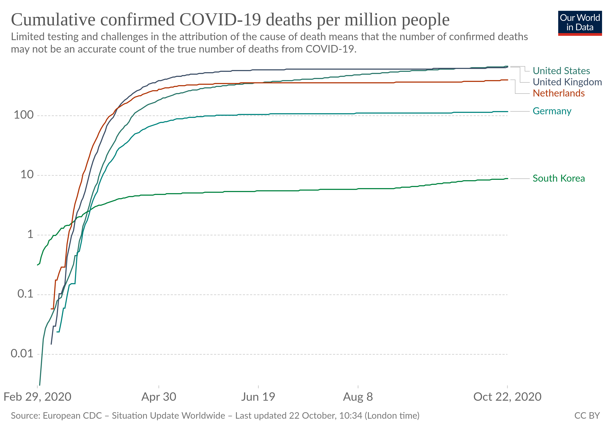
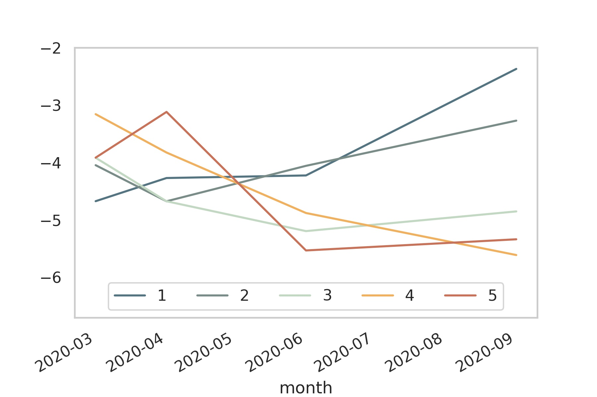
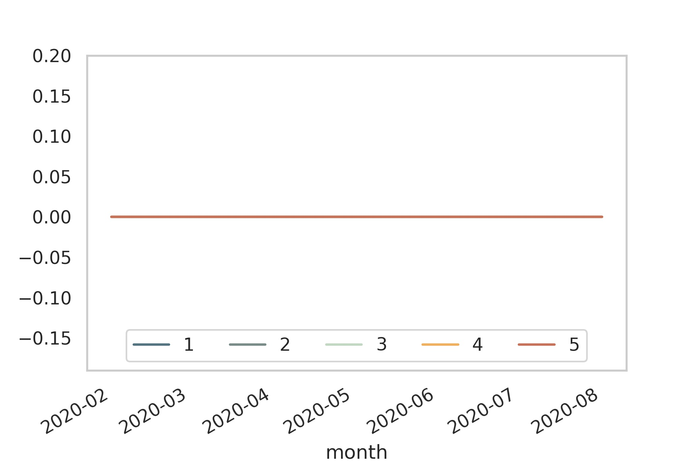
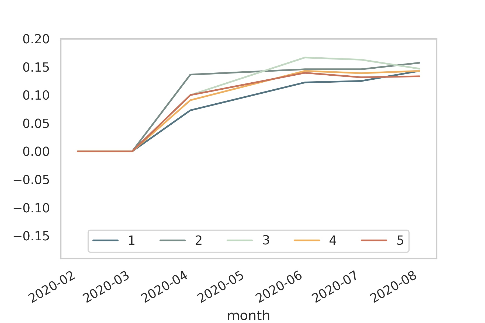

Webinar of the AKES: Implementation of the inclusive social protection scheme in an era of COVID-19 pandemic
Social protection during the CoViD-19 crisis: A view from Western Europe
Hans-Martin v. Gaudecker
Universität Bonn & IZA
Outline
- Aggregate Context
- Policy reactions
- Inequality outcomes
Daily new cases per million

Cumulative deaths per million

Q-on-Q GDP Growth

Monthly unemployment rate

Pandemic policy
- NL / Germany: Broadly similar
- Shelter-in-place policies came reasonably early, milder than in other countries
- Main difference after summer: Masks
- United Kingdom
- Shelter-in-place came late, ended up longer and harder
- United States:
- Late reaction, no clear policy at federal level
- States very different
- More politics than science
Data Source
- LISS: Online Panel in the Netherlands, running since 2007
- Based on probability sample
- Roughly 5,000 households / 7,500 individuals
- Each month, respondents get 30 minutes of questionnaires
- Background data on Work, Health, Income, ...
- Additional questionnaires designed by researchers
- Around 85% of respondents can be linked to administrative microdata (not today)
CoViD-19 surveys
- See https://liss-covid-19-questionnaires-documentation.readthedocs.io/
- March 20-31: Risk perceptions, behavioural reactions and preferences re social distancing policies, changes in the work and childcare situation, intentions and expectations regarding consumption/savings decisions, mental health
- April 6-28: Risk perceptions, number of personal contacts, changes in the work situation, income and macro expectations
- May Mostly labour, some health, home schooling
- June Mostly labour, lots of job search, how do parents deal with opening of daycares / primary schools?
- September: Risk perceptions, support for policies, changes in the work situation, income and macro expectations
U.K. comparison
- Understanding Society: Largest household panel in the U.K.
- A subset of respondents have received CoViD-19 surveys similar to ours since April
- Numbers here are taken from Crossley, Fisher, Low (2020)
Δ hours by income quintile

Δ income by quintile, p25

Δ income by quintile, p50

Δ income by quintile, p25

Same numbers for U.K., Δ May, Feb 2020
| Income quintile | p25 | p50 | p75 |
|---|---|---|---|
| 1 | -0.6 | -0.13 | 0.04 |
| 2 | -0.36 | -0.06 | 0.07 |
| 3 | -0.34 | -0.03 | 0.04 |
| 4 | -0.43 | -0.08 | 0.04 |
| 5 | -0.39 | -0.02 | 0.08 |
Conclusion
- Inequality impact an order of magnitude lower in NL (≅DE) compared to U.K. (≅U.S.)
- Ideal social policy is preserving employment relations in the short run (see also Jung & Kuester, 2015), not worrying about hours worked
- In the short run,
- there is no trade-off economy / controlling the pandemic.
- short lockdowns mitigate the inequality impact
- Large option value of functioning social insurance systems: Know how to reach vulnerable parts of the population
Social policy: Labour hoarding